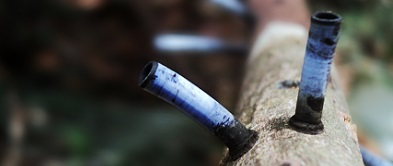
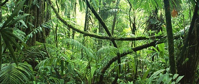

Levantamentos e Estudos

Realizamos o levantamento de dados e estudo de áreas, como inventários florestais e mapeamentos para subsidiar estuds e projetos, tais como:
• Inventários Florestais:
- Floresta Nativa para DAIA
- Inventário de Plantios Exóticos (Eucalipto, Mogno, etc.)
- Inventário Florestal Contínuo e Projeção Florestal
- Processamento de Dados de Inventário Florestal
- Quantificação de Carvão e Biomassa Florestal
- Treinamento de equipes
• Levantamentos de meio biótico para fins de EIA/RIMA
- Classificação de Vegetação
- Levantamentos Florísticos e Florestais
- Mapas de uso e ocupação do solo
• Levantamentos Topográficos e Aéreos:
- Planialtimétrico e Planimétrico
- Georreferenciamento de Imóveis
- Alocação de pontos e divisas
- Fotografia Aérea com Drones
- Ortofotos georreferenciadas
Licenciamento Ambiental e Sustentabilidade

Com as mudanças ambientais ocorridas nos últimos anos, incluindo a legislação, se faz necessário licenciar e regularizar empreendimentos possivelmente impactantes. Neste sentido, atuamos com:
• Cadastro Ambiental Rural (CAR) e Reserva Legal
• Gestão de Resíduos Industriais
• Sistemas de Gestão e Controle Ambiental
• Licenciamento Ambiental:
- Estudo de Impacto Ambiental e Relatório de Impacto Ambiental (EIA/RIMA)
- Plano de Controle Ambiental e Relatório de Controle Ambiental (PCA/RCA)
- Plano de Recuperação de Áreas Degradadas e Recomposição de Flora (PRAD/PTRF)
- Plano de Utilização Pretendida (PUP)
- Projetos de Compensação Ambiental e Florestal
- Relatório de Avaliação de Desempenho Ambiental (RADA)
• Outorga de uso da água
• Defesa de autos de infração
• Assistência técnica em perícias judiciais ambientais
Planejamento e Execução de Recuperação Ambiental e Florestal

Realizamos a execução de projetos de recuperação de áreas degradas e reconstituição de flora (PRAD/PTRF), desde a concepção do projetos até o último relatório de monitoramento.
Dentre essas atividades estão:
• Projeto Técnico de Reconstituição de Flora (PTRF)
• Execução de Plantios e Recuperação de Áreas
- Análise de Solo e cálculo de fertilizantes
- Controle de formigas e cupins, outras pragas e doenças
- Controle de forrageiras (capim)
- Plantio de Mudas Nativas ou Exóticas
- Atividades de condução florestal
- Monitoramento de plantios de recuperação
Complementação de projetos
Fornecemos assessoria, consultoria e composição de equipe técnica para projetos de maior tamanho ou complexidade, visando cobrir os assuntos relacionados à sustentabilidade, tais como:
• Loteamentos e parcelamentos de solo;
• Perícias Judiciais em Meio Ambiente e Florestas
• Acompanhamento de processos ambientais
• Análise de densidade e qualidade de madeira
• Projetos de Agrossilvicultura
• Planejamento de Riscos e Desastres Ambientais
• Auditoria de Projetos Florestais
• Projetos de plantios florestais (Eucalipto, Mogno, Cedro e outros)
• Projeto, planejamento e dimensionamento de viveiros e serrarias.
• Valoração e viabilidade de plantios e áreas
• Planejamento de riscos e emergências ambientais e proteção florestal